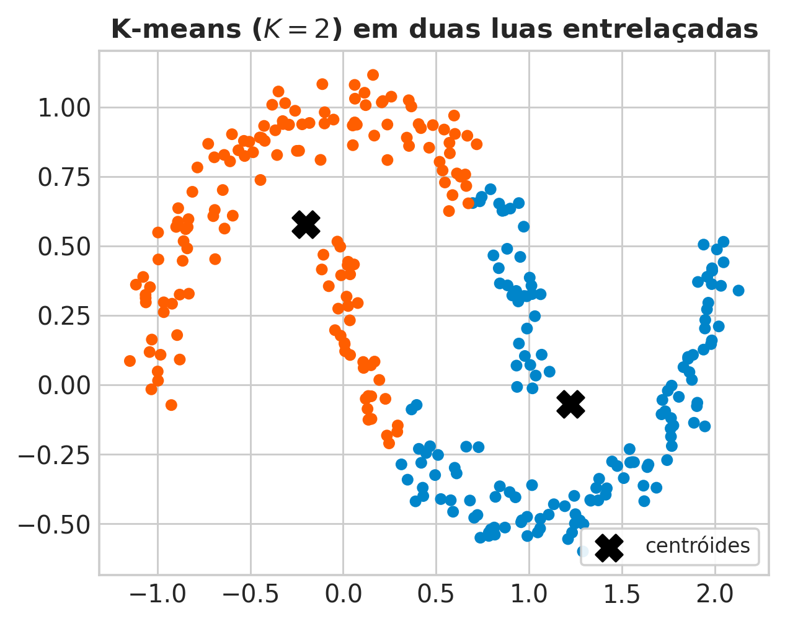
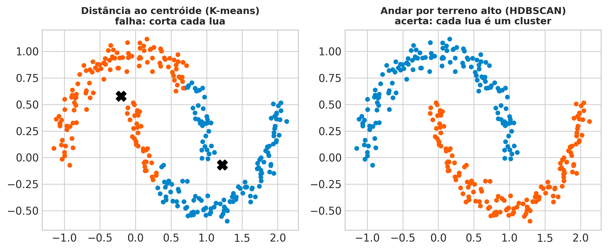
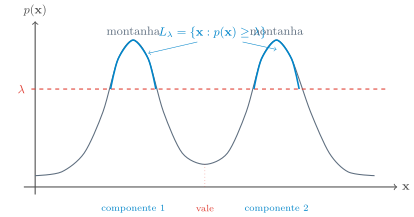
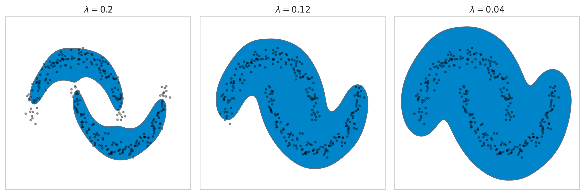
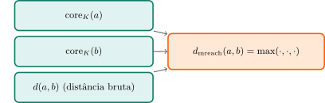
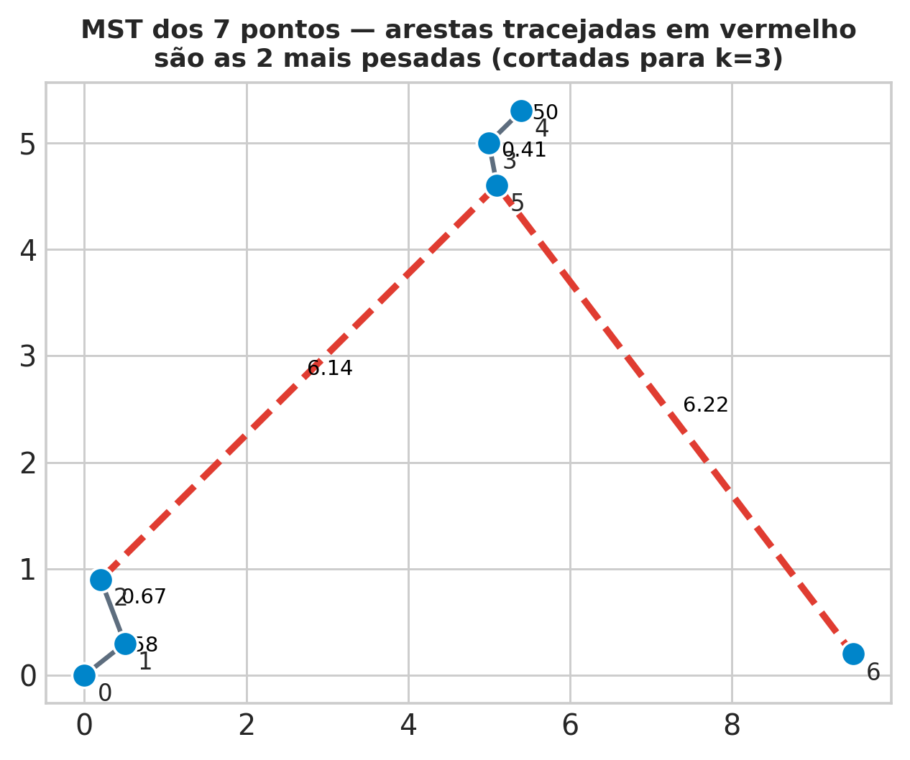
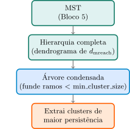
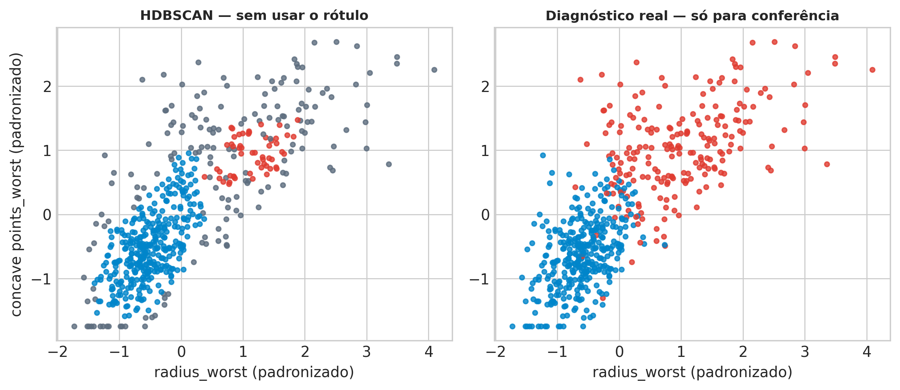

Aprendizado Não Supervisionado
2026-08-30
Aula 2: “esse valor de \(\mathbf{x}\) é comum ou raro?” — ponto a ponto, via \(d_K(\mathbf{x})\).
Hoje: agrupar pontos parecidos — sem saber quantos grupos existem nem que forma eles têm. Clustering.
Resposta mais comum: K-means — escolha \(K\) centros, atribua cada ponto ao mais próximo.
PRML (2006, p. 424), tradução livre: “encontrar uma atribuição de pontos a clusters […] tais que a soma dos quadrados das distâncias de cada ponto ao seu vetor mais próximo \(\boldsymbol\mu_k\) seja mínima.”
\[r_{nk}=1 \iff k=\arg\min_j \lVert\mathbf{x}_n-\boldsymbol\mu_j\rVert^2\] “Simplesmente atribuímos o \(n\)-ésimo ponto ao centro mais próximo” (PRML, p. 425).
ESL (2009, p. 510): essa partição chama-se tesselação de Voronoi.
Toda célula de Voronoi é convexa — interseção de semi-planos (“mais perto do centro \(k\) do que do centro \(j\)”).
Consequência: nenhuma atribuição por centróide, para nenhum \(K\), produz um cluster com forma de lua ou de anel. Uma fronteira reta que tente separar duas luas entrelaçadas corta pelo menos uma ao meio.
1. Se “distância ao centróide” falha para formas arbitrárias, o que deveria significar “cluster”?
2. Como construir isso computacionalmente, sem escolher \(K\) a priori?
3. Isso é um problema de grafos — qual estrutura captura toda a hierarquia de clusters de uma vez?
4. Como decidir quais clusters encontrados são reais, e quais são flutuação amostral?
Duas luas entrelaçadas (sintético, controlado) — a forma que nenhuma fronteira reta de Voronoi respeita. Aplicar K-means (\(K=2\)) e ver o corte.

Se a tesselação de Voronoi do K-means é sempre convexa, o que exatamente precisa mudar na definição de cluster para permitir grupos como as duas luas?
Dica: pense no que “convexo” está implicitamente assumindo sobre onde os pontos de um mesmo cluster podem estar, e o que teria que ser verdade para dispensar essa suposição.
Resposta — o que precisa mudar na definição de cluster
Voltando à pergunta: a definição precisa trocar “perto de um centro” por “conectado por uma trilha de densidade alta” — exatamente a tese que o Bloco 3 formaliza.
Pense em \(p(\mathbf{x})\) como uma paisagem: montanhas = regiões densas, vales = regiões raras.
Um cluster é uma montanha inteira — não importa o formato do contorno, só que seja um bloco conectado de terreno alto, separado dos outros por um vale.
Algoritmo: não “que centro fixo está mais perto?”, mas “caminhando por terreno alto, até onde eu chego sem descer a um vale?”
Uma lua inteira, mesmo curva, é uma trilha alta conectada de ponta a ponta — mesmo que as duas pontas estejam geometricamente longe em linha reta.

Duas luas — K-means: 0.757 HDBSCAN: 1.000
Dois anéis — K-means: 0.507 HDBSCAN: 1.000Duas luas: K-means \(\approx 75{,}7\%\) de acurácia contra o rótulo verdadeiro; HDBSCAN (o algoritmo desta aula) \(=100\%\).
Dois anéis concêntricos (forma ainda mais hostil à convexidade): K-means \(\approx 50{,}7\%\) — essencialmente chute aleatório entre dois rótulos; HDBSCAN \(=100\%\).
Não é coincidência: é convexidade de Voronoi (K-means) contra nenhuma suposição de forma (densidade-conectividade).
(i) Formalizar “montanha” como conjunto de nível de densidade (Bloco 3).
(ii) Transformar isso num grafo, com uma distância que “sabe” onde é vale e onde é montanha (Bloco 4).
(iii) Extrair desse grafo uma única estrutura com toda a hierarquia de clusters possível, de uma vez (Bloco 5).
Duas montanhas separadas por um vale raso (densidade baixa, mas não zero) — “andar por terreno alto” as trata como um cluster só, ou dois?
Dica: pense no que muda se o vale for rebaixado ainda mais, até chegar a densidade zero, comparado ao vale raso original.
Resposta — cluster só ou dois clusters?
Voltando à pergunta: a resposta depende de \(\lambda\) — e é exatamente essa dependência que o Bloco 3 transforma em definição formal.
Corte transversal 1D: eixo \(\mathbf{x}\), densidade \(p(\mathbf{x})\) no eixo vertical — duas “montanhas” separadas por um “vale”.

Limiar \(\lambda\) (linha vermelha): \(L_\lambda\) = trecho do eixo onde a curva está acima da linha — aqui, 2 componentes, uma por montanha (o vale fica abaixo de \(\lambda\)).
Baixar \(\lambda\) até abaixo da altura do vale funde as duas componentes numa só — verificado a seguir com densidade real (KDE, duas luas).
Conjunto de nível de densidade, limiar \(\lambda\ge 0\): \[L_\lambda = \{\mathbf{x} : p(\mathbf{x}) \ge \lambda\}\]
Definição central da aula: um cluster, num nível \(\lambda\) fixo, é uma componente conexa de \(L_\lambda\) — não precisa ser convexa, só precisa ser percorrível inteira sem descer abaixo de \(\lambda\).
Combinatório (K-means): sem referência a densidade — Bloco 1.
Modelagem por mistura: densidade paramétrica, \(K\) componentes — Aula 4.
“Mode seeking” (esta aula), tradução livre: “tentando estimar diretamente as modas distintas da densidade […] observações mais próximas de cada moda definem os clusters” (p. 507).
\(\lambda\) alto: só os picos mais extremos sobrevivem — poucas regiões pequenas, bem separadas.
\(\lambda\) caindo: cada região cresce; em algum ponto, duas regiões antes separadas se tocam e se fundem.
\(\lambda=0\): \(L_0\) é o suporte inteiro — uma componente só (supondo suporte conexo).
Hierarquia indexada por \(\lambda\): decrescer \(\lambda\) só funde componentes, nunca separa — mesma lógica do dendrograma (Bloco 5).

\(\lambda=0{,}20\): as duas luas são regiões separadas de \(L_\lambda\).
\(\lambda=0{,}04\): o vale entre as luas já foi absorvido — uma componente conexa só.
Problema aberto: qual \(\lambda\) escolher? Resposta no Bloco 6 — não escolher um único \(\lambda\), medir persistência ao longo de toda a faixa.
No limite \(\lambda \to \infty\), quantas componentes conexas tem \(L_\lambda\), em geral?
Dica: pense no que sobra de “terreno acima de \(\lambda\)” quando \(\lambda\) é maior que a densidade máxima de qualquer região dos dados.
Resposta — o limite \(\lambda \to \infty\)
Voltando à pergunta: o vale raso do Bloco 2 agora tem nome — depende inteiramente de onde \(\lambda\) corta. O Bloco 4 constrói a ferramenta computável para não depender de escolher \(\lambda\) à mão.
Aula 2: \(d_K(\mathbf{x})\) pequeno = região densa; grande = região rara — estimador de densidade, sem forma paramétrica.
Hoje: novo nome, core distance — \(\mathrm{core}_K(\mathbf{x}) = d_K(\mathbf{x})\) — e novo uso: peso de aresta num grafo.
Nota
1. \(\mathrm{core}_K\) pequeno \(\Leftrightarrow\) região densa.
2. Distância bruta \(d(a,b)\) não diz nada sobre densidade da vizinhança de \(a\) ou \(b\).
3. Cluster = conectividade dentro de terreno alto — a distância do grafo precisa penalizar caminhos por regiões raras.
\(a\) numa região densa (muita gente parecida por perto); \(b\) sozinho, longe de todo vizinho — mas \(d(a,b)\) pequeno.
Conectar \(a,b\) pela distância bruta ignora que \(b\) está, na prática, isolado — \(b\) só “parece” perto de \(a\), sem trilha densa ligando os dois.

\[d_{\mathrm{mreach}}(a,b) = \max\bigl(\mathrm{core}_K(a), \mathrm{core}_K(b), d(a,b)\bigr)\]
Se \(b\) está isolado (\(\mathrm{core}_K(b)\) grande): \(d_{\mathrm{mreach}}(a,b) \ge \mathrm{core}_K(b)\) para qualquer \(a\) — \(b\) nunca parece mais perto de ninguém do que permite sua própria distância ao vale mais próximo.
Se \(a,b\) moram na mesma região densa: \(d_{\mathrm{mreach}}(a,b)\) continua pequeno — a distância bruta domina o máximo.
Nunca aproxima, só afasta: \(d_{\mathrm{mreach}}(a,b)\ge d(a,b)\) sempre — acalma isolados sem alterar nada dentro de uma região já densa.
# Núcleo pequeno (K=5) sobre os dois atributos reais que vão sustentar
# o Bloco 6 -- ilustra a "calma" da alcançabilidade mútua em 5 pacientes
# escolhidos deliberadamente: 4 numa vizinhança densa, 1 isolado.
_tree_2d = cKDTree(X_2d)
_core_2d = core_distance(X_2d, K=5)
_isolado = np.argmax(_core_2d) # paciente com o maior core distance
_denso = np.argsort(_core_2d)[:4] # 4 pacientes na região mais densa
_a, _b = _denso[0], _isolado
_d_raw = np.linalg.norm(X_2d[_a] - X_2d[_b])
_d_mreach = max(_core_2d[_a], _core_2d[_b], _d_raw)
print(f"core({_a})={_core_2d[_a]:.3f} core({_b})={_core_2d[_b]:.3f} "
f"d_bruta={_d_raw:.3f} d_mreach={_d_mreach:.3f}")core(418)=0.033 core(461)=1.288 d_bruta=5.388 d_mreach=5.388Se \(\mathrm{core}_K(a) = \mathrm{core}_K(b) = 0\) (dois pontos coincidentes com pelo menos \(K\) outros pontos na mesma posição exata), o que \(d_{\mathrm{mreach}}(a,b)\) vale?
Dica: releia a fórmula — o que o \(\max\) faz quando dois dos três termos são zero?
Resposta — o caso extremo \(\mathrm{core}_K=0\)
Voltando à pergunta: quando ambos os núcleos são pequenos (região densa dos dois lados), a alcançabilidade mútua colapsa na distância bruta — exatamente o comportamento que o Bloco 5 vai usar para construir o grafo completo.
Grafo completo, pesos \(d_{\mathrm{mreach}}(i,j)\) — \(N(N-1)/2\) arestas, pesado.
Árvore Geradora Mínima (MST): árvore de \(N-1\) arestas que conecta todos os \(N\) vértices com a menor soma de pesos possível.
ESL (p. 523), tradução livre: “a dissimilaridade intergrupo [é] a do par mais próximo: \(d_{SL}(G,H)=\min_{i\in G,i'\in H} d_{ii'}\)” — o “vizinho mais próximo”.
Começa com \(N\) clusters (um por ponto); a cada passo funde os dois clusters com a menor distância entre um par de membros — \(N-1\) fusões, cada uma num nível maior que a anterior.
Cortar as \(k-1\) arestas mais pesadas da MST = as \(k\) componentes de ligação simples com \(k\) clusters.
Não é intuitivo — verificar com um exemplo pequeno antes de aceitar.
# Exemplo pequeno e concreto: 7 pontos 2D em 3 grupos visuais --------
pts = np.array([
[0.0, 0.0], [0.5, 0.3], [0.2, 0.9], # grupo A (perto da origem)
[5.0, 5.0], [5.4, 5.3], [5.1, 4.6], # grupo B
[9.5, 0.2], # ponto C, isolado
])
n_pts = len(pts)
D_pts = squareform(pdist(pts))
edges_pts = mst_edges_sorted(D_pts)
print("Arestas da MST (i, j, peso), ordem crescente:")
for i, j, w in edges_pts:
print(f" ({i},{j}) peso={w:.3f}")
from scipy.cluster.hierarchy import linkage, fcluster
from sklearn.metrics import adjusted_rand_score
Z_pts = linkage(pts, method='single')
for k in [2, 3]:
labels_mst = clusters_from_mst_cut(edges_pts, n_pts, k)
labels_sl = fcluster(Z_pts, k, criterion='maxclust')
ari = adjusted_rand_score(labels_mst, labels_sl)
print(f"k={k}: MST-corte = {labels_mst} ligação-simples = {labels_sl} ARI = {ari:.2f}")Arestas da MST (i, j, peso), ordem crescente:
(3,5) peso=0.412
(3,4) peso=0.500
(0,1) peso=0.583
(1,2) peso=0.671
(2,5) peso=6.140
(5,6) peso=6.223
k=2: MST-corte = [0 0 0 0 0 0 1] ligação-simples = [1 1 1 1 1 1 2] ARI = 1.00
k=3: MST-corte = [0 0 0 1 1 1 2] ligação-simples = [2 2 2 1 1 1 3] ARI = 1.00
7 pontos, 3 grupos visuais: A (\(0,1,2\)), B (\(3,4,5\)), ponto isolado \(6\). MST tem \(N-1=6\) arestas.
\(k=2\) (corta 1 aresta mais pesada): MST dá \(\{0..5\},\{6\}\) — ligação simples dá o mesmo (ARI \(=1{,}00\)).
\(k=3\) (corta 2 mais pesadas): MST dá \(\{0,1,2\},\{3,4,5\},\{6\}\) — ligação simples de novo idêntico (ARI \(=1{,}00\)).
Curioso: A e B se fundem antes de \(6\) (\(6{,}14 < 6{,}22\)) — “vizinho mais próximo” nem sempre é o mais intuitivo à primeira vista, mas é correto pela definição.
Uma única árvore de \(N-1\) arestas contém a hierarquia inteira — para qualquer \(k\), corte as \(k-1\) arestas mais pesadas, sem recálculo.
ESL (p. 524), tradução livre, sobre o defeito da ligação simples: “tendência a combinar […] observações ligadas por uma série de observações intermediárias próximas […] chamado de encadeamento”.
Encadeamento + “que \(k\)/\(\lambda\) escolher?” (Bloco 3) → o Bloco 6 ataca os dois.
Se um único ponto de ruído for inserido exatamente no meio do “vale” entre dois clusters genuinamente distintos, o que acontece com a MST e com o clustering por ligação simples resultante?
Dica: pense no “encadeamento” citado do ESL — o que uma única observação intermediária bem posicionada consegue fazer.
Resposta — um ponto de ruído no vale
min_cluster_size/persistência no Bloco 6.Voltando à pergunta: encadeamento não é resolvido só pela alcançabilidade mútua — o Bloco 6 ataca o problema de frente, exigindo que um cluster “sobreviva” por um tamanho mínimo, não só por uma cadeia fina de pontos.
(i) Um \(\lambda\) fixo não serve para clusters de densidades muito diferentes entre si.
(ii) Encadeamento pode ligar, por um fio fino, dois grupos que “deveriam” ser distintos.
HDBSCAN (Campello, Moulavi & Sander, 2013) ataca os dois com uma ideia nova: persistência.
Hierarquia completa = um filme: em cada quadro (\(\lambda\) de corte), alguns clusters existem, outros não.
Um cluster que sobrevive por muitos quadros seguidos é mais “real” do que um que aparece e desaparece rápido.

1. Árvore condensada — ramo com menos que min_cluster_size pontos não é cluster novo, é “perda” do cluster-pai.
2. Persistência (excesso de massa) — soma, por ponto do ramo, do intervalo de \(\lambda\) em que pertenceu a esse cluster específico.
3. Extração — em cada ramificação, escolhe entre “manter o pai” ou “dividir nos filhos” pela maior persistência total (programação dinâmica).
Resultado: clusters extraídos de alturas diferentes da árvore — não vem de um único corte horizontal em \(\lambda\).
Clusters encontrados (rótulo: nº de pacientes): {np.int64(-1): np.int64(168), np.int64(0): np.int64(54), np.int64(1): np.int64(347)}
Fração marcada como ruído (-1): 0.295
\(569\) pacientes, radius_worst + concave points_worst, min_cluster_size=15: 2 clusters + \(168\) pacientes como ruído (\(\approx 29{,}5\%\)).
Cluster 0 (\(54\) pacientes): 100% malignos — uma montanha densa e pura, encontrada sem nunca ver o rótulo.
Cluster 1 (\(347\) pacientes): \(315\) benignos + \(32\) malignos (\(\approx 90{,}8\%\) de pureza benigna).
Dos \(212\) pacientes malignos: \(54\) no cluster puro, \(32\) no cluster misto, \(126\) (\(\approx 59{,}4\%\)) em ruído.
Maligno varia mais em apresentação (múltiplos subtipos/estágios) — só uma fração forma montanha densa o bastante para sobreviver como cluster de alta persistência nesses 2 atributos.
ARI \(=0{,}644\) (excluindo ruído) — concordância forte. ARI \(=0{,}493\) (todos, ruído como rótulo próprio).
Não é \(1{,}0\): HDBSCAN não é classificador, não viu o rótulo. Encontrar estrutura alinhada ao diagnóstico, sem supervisão, é o resultado.
Se min_cluster_size fosse reduzido de 15 para 2 no exemplo do Breast Cancer Wisconsin, o que aconteceria com a fração de pacientes marcados como ruído, e por quê?
Dica: pense no que min_cluster_size está, na prática, impedindo de virar cluster.
min_cluster_size para 2 tende a diminuir a fração de ruído, porque ramos muito pequenos da árvore condensada (antes descartados como “perda” do cluster-pai) passam a contar como clusters válidos por si mesmos.min_cluster_size=2 reintroduz, na prática, uma versão do problema de encadeamento (chaining) da ligação simples pura — uma cadeia fina de 2-3 pontos já basta para ser aceita como cluster próprio.min_cluster_size não afeta a fração de ruído — ele só afeta quantos clusters distintos são extraídos, mantendo o total de pontos “ruidosos” constante.min_cluster_size continua sendo, mesmo no HDBSCAN, uma decisão de escala imposta pelo usuário — a persistência decide quais ramos sobrevivem, mas não decide, por si só, o tamanho mínimo que conta como ramo.Resposta — reduzindo min_cluster_size para 2
min_cluster_size continua sendo escolha de escala do usuário — persistência decide quais ramos sobrevivem, não o tamanho mínimo de ramo.Voltando à pergunta: o HDBSCAN troca “escolher \(\lambda\)” por “escolher min_cluster_size” — não elimina a decisão de escala, só a move para um parâmetro mais estável e mais fácil de interpretar (Bloco 7).
(1) \(\mathrm{core}_K(\mathbf{x})=d_K(\mathbf{x})\) (Aula 2): mede densidade local, sem forma paramétrica.
(2) \(d_{\mathrm{mreach}}\): transforma em distância de grafo que acalma pontos isolados.
(3) MST: comprime toda a hierarquia de ligação simples numa única árvore.
(4) Árvore condensada + persistência: extrai os clusters mais estáveis, sem corte global único.
Nenhuma suposição de convexidade — luas e anéis resolvidos de ponta a ponta.
Nenhuma escolha obrigatória de \(K\).
Pontos atípicos podem ser ruído — não forçados a um cluster.
1. min_cluster_size/min_samples ainda é escolha de escala — reduzir demais reintroduz encadeamento (Bloco 6).
2. Herda a maldição da dimensionalidade de \(d_K(\mathbf{x})\) — é literalmente o mesmo número.
min_cluster_size= 5 → 2 cluster(s), 59.2% dos pacientes como ruído
min_cluster_size= 10 → 0 cluster(s), 100.0% dos pacientes como ruído
min_cluster_size= 15 → 0 cluster(s), 100.0% dos pacientes como ruído
min_cluster_size= 20 → 0 cluster(s), 100.0% dos pacientes como ruído
min_cluster_size= 30 → 0 cluster(s), 100.0% dos pacientes como ruído\(2\) atributos (Bloco 6): \(70{,}5\%\) dos pacientes em algum cluster.
\(30\) atributos, min_cluster_size=5: \(\approx 59{,}2\%\) já é ruído.
\(30\) atributos, min_cluster_size\ge 10: \(100\%\) ruído — nenhum cluster sobrevive.
Mesmo mecanismo da Aula 2: distâncias perdem poder discriminativo, \(d_K\) some, \(d_{\mathrm{mreach}}\) herda, árvore condensada não encontra ramo estável.
Um colega sugere “resolver” a queda de estrutura em 30 dimensões aumentando min_cluster_size até encontrar pelo menos um cluster de novo. Isso resolveria o problema de fundo?
Dica: pense se min_cluster_size grande está atacando a causa (distâncias perdendo poder discriminativo) ou só mudando o limiar de quantos pontos “contam”.
min_cluster_size pode, sim, eventualmente produzir algum cluster de novo — mas isso resolve o sintoma (nenhum cluster aparecia) sem resolver a causa (as distâncias em 30D perderam poder discriminativo).min_cluster_size bem alto em 30D, ele é necessariamente tão confiável estatisticamente quanto o cluster puro de \(54\) pacientes encontrado com \(2\) atributos no Bloco 6.min_cluster_size.Resposta — “resolver” aumentando min_cluster_size
min_cluster_size alto não é automaticamente tão confiável quanto o cluster puro do Bloco 6 — pode ser um artefato do limiar, não estrutura real.Voltando à pergunta: a maldição não tem solução mágica dentro do próprio algoritmo — reduzir dimensionalidade, ou usar conhecimento de domínio para escolher poucos atributos relevantes (como o Bloco 6 fez “na mão”), é o caminho, não um parâmetro a mais.
1. O que é “cluster”? Componente conexa de região de alta densidade — não bola em torno de centróide.
2. Como construir sem escolher \(K\)? \(d_{\mathrm{mreach}}\) + MST, sem parâmetro de forma, só uma escala local (\(K\) do núcleo).
3. Que grafo captura toda a hierarquia? A MST — cortar as \(k-1\) arestas mais pesadas reproduz ligação simples para qualquer \(k\).
4. Como decidir quais clusters são reais? Persistência por excesso de massa na árvore condensada.
HDBSCAN entrega partição rígida: cada ponto é de um cluster, ou é ruído — decisão binária.
Honesto quando clusters são bem separados; força escolha artificial quando dois clusters genuinamente se sobrepõem.
Ponte para a Aula 4
Modelos de Mistura Gaussiana + EM: mesma pergunta de agrupar, mas atribuição probabilística — cada ponto com uma probabilidade por cluster, não um rótulo único. Útil onde o HDBSCAN força escolha.
ESL (p. 507): “modelagem por mistura” era o terceiro paradigma citado desde a Abertura — a Aula 4 fecha o trio (combinatório, mistura, modo).
Um hospital precisa decidir se atribuição rígida (HDBSCAN) ou probabilística (GMM/EM, Aula 4) se ajusta melhor a uma triagem entre dois subtipos de tumor cujos biomarcadores parecem se sobrepor. O que deveria pesar mais nessa escolha?
Dica: pense se a “ambiguidade” observada nos dados é evidência de um vale de densidade genuíno entre os subtipos, ou de uma sobreposição real e contínua entre eles.
Resposta — partição rígida ou probabilística?
Voltando à pergunta: a escolha depende de crer (ou não) que existe um vale de densidade genuíno separando os subtipos — exatamente a pergunta que a Aula 4 equipa o aluno para responder com uma ferramenta nova.
UNICAMP — Instituto de Computação